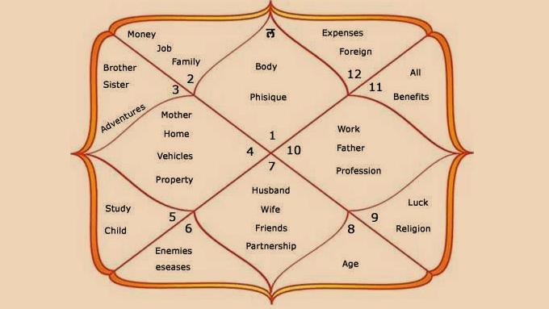

Horoscope
Loading...
Zodiac Signs

Loading...
Astrology Compatibility
Loading...
Birth Chart
Loading...
Astrological Remedies
Loading...
Fun Facts About Astrology
1. Astrology dates back to ancient Babylon, around the 2nd millennium BC.
2. There are 12 zodiac signs, each corresponding to a segment of the celestial sphere.
3. Your zodiac sign can reveal insights about your personality and relationships.
4. Astrology is not just about predicting the future, but also understanding oneself.
About Astrology
Astrology is the study of the movements and relative positions of celestial bodies interpreted as having an influence on human affairs and the natural world.
It offers insights into our personality traits, challenges, and opportunities through the lens of the stars and planets.